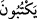
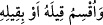

/yektubûne” kelimesine mâtuftur. Yani “bizim yazıcı melek elçilerimiz, onların her
yaptıklarını yazarlar. Peygamber (s.a.)’in şu sözünü de yazarlar.”
Bazıları şöyle demiştir. Burada evlâ olan görüş, cer yahut nasbın, yemin harfinin
takdir edilmesine yahut hazfedilmesine göredir. Bu durum senin “/Allâhe le
efalenne” (Allah’a yemin olsun ki elbette (bu işi) yapacağım) sözünde yemin harfinin
gizlenip takdir edilmesi gibidir. Bu takdir, cer oluşudur. Nasb durumuna gelince bu da
harfi cerrin hazfedilip fiilin mânâsının mecrura ulaştırılmasıdır. Senin “/Allâhe
le efalenne” Allah’a yemin olsun ki elbette bu işi yapacağım sözünde olduğu gibi. Bu
sanki “/ve uksimu kîlehû ev bi kîlihî” denilmiş gibidir. Harf-i cerrin
hazfedilmesi ile gidenin eseri kalmaz. “/ve’s’eli’l-karyete” gibi ki burada
“ehle’l-karyeti” demek olup “ehl” kelimesi hazfedildikten sonra geride bir eseri
kalmayarak artık terkip “ehl” kelimesinin yokluğuna göre tanzim edilir. Kelimenin izmar
ve takdir edilmesi durumunda ise takdir edilen kelimenin eseri kalmaktadır. Nisa sûresi
177. âyetin bir bölümünde “/intehû hayran leküm” yani “teslisten, Allah
üçtür demekten vaz geçin ve sizin için daha hayırlı olanı yapın” ifâdesinde olduğu
gibidir ki bu ifâdenin takdiri “/if’alû hayran leküm” yani “sizin için hayırlı
olanı yapın” demektir.
Bu “/kîylıhî” kelimesinin mübteda olmak üzere merfû bir yemin olup haberin
hazfedilmiş olması da câizdir. Arapların “eymunillahi” sözü gibi. Dolayısıyla bununla
Allah’a yemin yapılmıştır, demek olur. Bu durumda “inne hâulâi” cümlesi yeminin
cevabı olur. Yani Peygamber’in sözü “Ya Rabbi! Benim yeminim şudur ki, bunlar
inanmıyorlar” demektir.
Bu âyetteki “vav” harfinin yemin vâvı olup böyle birçok tevcihâtın ortaya çıkması
şunun içindir: Şâyet bu vav atıf vâvı olursa, mâtuf ile mâtufun aleyh arasında pek de
güzel olmayan uzunca itirâzî cümleler girmiş olur. Şâyet “ve kîluhû” şeklinde merfu
olursa, bu durumda terkipte bir münâferet olmakla birlikte bir muzaf takdiriyle bu
kelime “/ilmü’s-sa’ah” kelimesine mâtûf olur.
Cârullah Zemahşerî, burada nazmın tenâfüründen ve mâtuf ile mâtuf aleyhin arasına
fâsıla girmesinden dolayı yemin ihtimalini tercih etmiştir. Ancak bu ihtimal yeminde
kullanımı pek de yaygın olmayan bir lafızda zâhir hiçbir karine olmadan bir takım hazif
ve izmarı gerektirmektedir. Müftî Sa’dî’nin hâşiyesinde böyle geçmektedir.
89. (Peygamber’in sözüne karşılık Allah:) Şimdilik sen onlardan yüz çevir ve size
selam olsun de. Yakında bilecekler! buyurdu.